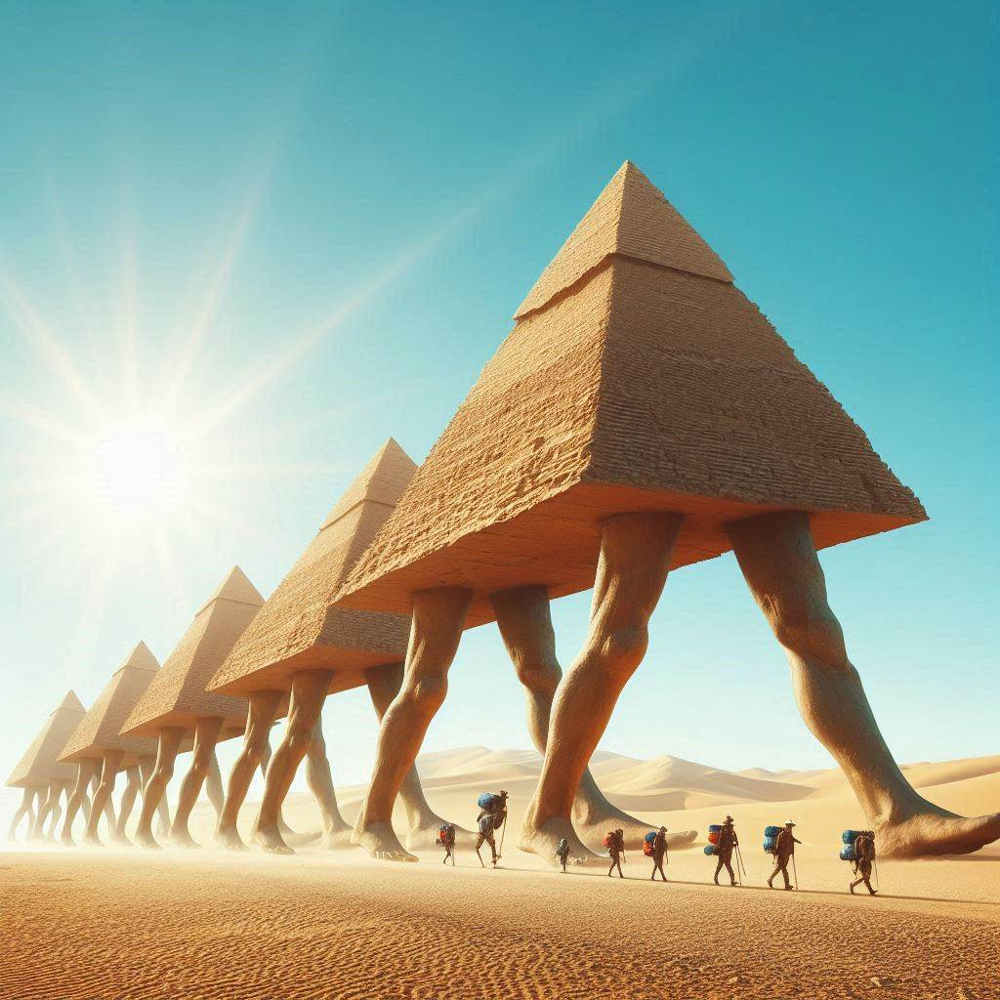

Introduktion
Burkina Faso har blivit känt för sina unika och mystiska “rörande pyramider”. Dessa pyramider, som sägs ha ben och förmågan att röra sig, har skapat stor uppståndelse och lockar nu turister från hela världen. Fenomenet har inte bara fascinerat lokalbefolkningen utan även forskare och äventyrare som vill förstå och uppleva detta märkliga fenomen.
Ursprung och Myter
Historierna om de rörande pyramiderna har djupa rötter i lokal folklore. Enligt legenderna började dessa pyramider röra sig för att skydda byarna från onda andar och för att bringa lycka och välstånd. Det sägs att pyramiderna vaknar till liv under speciella ceremonier och festivaler, vilket gör dem till en central del av byns kulturella och religiösa liv.
Vetenskapliga Förklaringar
Forskare har försökt förklara fenomenet med olika teorier. Vissa menar att det kan vara en optisk illusion, medan andra tror att det finns en naturlig förklaring bakom pyramiderna som “vandrar”. En teori är att markens geologiska sammansättning och rörelser kan skapa intrycket av att pyramiderna rör sig. Trots många försök har ingen definitiv förklaring ännu kunnat fastställas.
Turismens Uppgång
Sedan upptäckten av de rörande pyramiderna har turismen i Burkina Faso blomstrat. Besökare kommer för att bevittna detta unika fenomen och för att uppleva den rika kulturen och gästfriheten i regionen. Lokala företag har sett en ökning i intäkter, och nya jobb har skapats inom turistsektorn. Guidade turer, souvenirbutiker och kulturella evenemang har blivit vanliga inslag i byarna nära pyramiderna.

Lokala Invånares Perspektiv
För de lokala invånarna är pyramiderna mer än bara en turistattraktion. De ses som en del av deras kulturarv och en symbol för deras historia och traditioner. Många bybor är stolta över att dela sina berättelser och traditioner med besökare, och de ser turismen som ett sätt att bevara och främja deras unika kultur. Samtidigt finns det en medvetenhet om att balansera turismens fördelar med behovet av att skydda och respektera deras heliga platser.
Framtida Utveckling
Med den ökande turismen planerar Burkina Faso att utveckla infrastrukturen runt de rörande pyramiderna. Detta inkluderar byggandet av nya hotell, restauranger och turistcenter för att bättre kunna ta emot de många besökarna. Regeringen och lokala myndigheter arbetar tillsammans för att säkerställa att utvecklingen sker på ett hållbart sätt, som gynnar både turister och lokalbefolkningen.
Slutsats
De rörande pyramiderna i Burkina Faso är ett fascinerande fenomen som kombinerar myt, vetenskap och turism. De fortsätter att locka och förundra människor från hela världen, och deras historia är ett levande bevis på mänsklighetens eviga fascination för det okända. Genom att omfamna och dela detta unika arv kan Burkina Faso fortsätta att växa som en destination för äventyr och upptäckter.